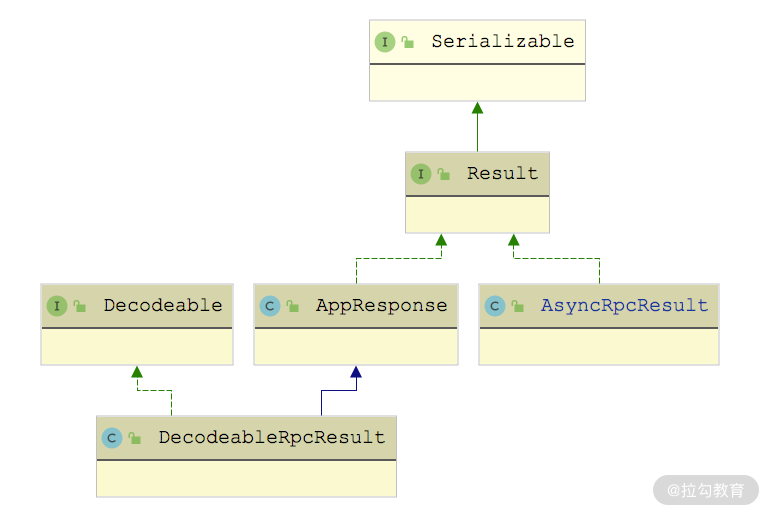

- 00 开篇词 深入掌握 Dubbo 原理与实现，提升你的职场竞争力.md.html
- 01 Dubbo 源码环境搭建：千里之行，始于足下.md.html
- 02 Dubbo 的配置总线：抓住 URL，就理解了半个 Dubbo.md.html
- 03 Dubbo SPI 精析，接口实现两极反转（上）.md.html
- 04 Dubbo SPI 精析，接口实现两极反转（下）.md.html
- 05 海量定时任务，一个时间轮搞定.md.html
- 06 ZooKeeper 与 Curator，求你别用 ZkClient 了（上）.md.html
- 07 ZooKeeper 与 Curator，求你别用 ZkClient 了（下）.md.html
- 08 代理模式与常见实现.md.html
- 09 Netty 入门，用它做网络编程都说好（上）.md.html
- 10 Netty 入门，用它做网络编程都说好（下）.md.html
- 11 简易版 RPC 框架实现（上）.md.html
- 12 简易版 RPC 框架实现（下）.md.html
- 13 本地缓存：降低 ZooKeeper 压力的一个常用手段.md.html
- 14 重试机制是网络操作的基本保证.md.html
- 15 ZooKeeper 注册中心实现，官方推荐注册中心实践.md.html
- 16 Dubbo Serialize 层：多种序列化算法，总有一款适合你.md.html
- 17 Dubbo Remoting 层核心接口分析：这居然是一套兼容所有 NIO 框架的设计？.md.html
- 18 Buffer 缓冲区：我们不生产数据，我们只是数据的搬运工.md.html
- 19 Transporter 层核心实现：编解码与线程模型一文打尽（上）.md.html
- 20 Transporter 层核心实现：编解码与线程模型一文打尽（下）.md.html
- 21 Exchange 层剖析：彻底搞懂 Request-Response 模型（上）.md.html
- 22 Exchange 层剖析：彻底搞懂 Request-Response 模型（下）.md.html
- 23 核心接口介绍，RPC 层骨架梳理.md.html
- 24 从 Protocol 起手，看服务暴露和服务引用的全流程（上）.md.html
- 25 从 Protocol 起手，看服务暴露和服务引用的全流程（下）.md.html
- 26 加餐：直击 Dubbo “心脏”，带你一起探秘 Invoker（上）.md.html
- 27 加餐：直击 Dubbo “心脏”，带你一起探秘 Invoker（下）.md.html
- 28 复杂问题简单化，代理帮你隐藏了多少底层细节？.md.html
- 29 加餐：HTTP 协议 + JSON-RPC，Dubbo 跨语言就是如此简单.md.html
- 30 Filter 接口，扩展 Dubbo 框架的常用手段指北.md.html
- 31 加餐：深潜 Directory 实现，探秘服务目录玄机.md.html
- 32 路由机制：请求到底怎么走，它说了算（上）.md.html
- 33 路由机制：请求到底怎么走，它说了算（下）.md.html
- 34 加餐：初探 Dubbo 动态配置的那些事儿.md.html
- 35 负载均衡：公平公正物尽其用的负载均衡策略，这里都有（上）.md.html
- 36 负载均衡：公平公正物尽其用的负载均衡策略，这里都有（下）.md.html
- 37 集群容错：一个好汉三个帮（上）.md.html
- 38 集群容错：一个好汉三个帮（下）.md.html
- 39 加餐：多个返回值不用怕，Merger 合并器来帮忙.md.html
- 40 加餐：模拟远程调用，Mock 机制帮你搞定.md.html
- 41 加餐：一键通关服务发布全流程.md.html
- 42 加餐：服务引用流程全解析.md.html
- 43 服务自省设计方案：新版本新方案.md.html
- 44 元数据方案深度剖析，如何避免注册中心数据量膨胀？.md.html
- 45 加餐：深入服务自省方案中的服务发布订阅（上）.md.html
- 46 加餐：深入服务自省方案中的服务发布订阅（下）.md.html
- 47 配置中心设计与实现：集中化配置 and 本地化配置，我都要（上）.md.html
- 48 配置中心设计与实现：集中化配置 and 本地化配置，我都要（下）.md.html
- 49 结束语 认真学习，缩小差距.md.html
- 捐赠
27 加餐：直击 Dubbo “心脏”，带你一起探秘 Invoker（下）
关于 DubboInvoker，在发送完oneway 请求之后，会立即创建一个已完成状态的 AsyncRpcResult 对象（主要是其中的 responseFuture 是已完成状态）。这在上一课时我们已经讲解过了。
本课时我们将继续介绍 DubboInvoker 处理 twoway 请求和响应的相关实现，其中会涉及响应解码、同步/异步响应等相关内容；完成对 DubboInvoker 的分析之后，我们还会介绍 Dubbo 中与 Listener、Filter 相关的 Invoker 装饰器。
再探 DubboInvoker
那 DubboInvoker 对twoway 请求的处理又是怎样的呢？接下来我们就来重点介绍下。首先，DubboInvoker 会调用 getCallbackExecutor() 方法，根据不同的 InvokeMode 返回不同的线程池实现，代码如下：
protected ExecutorService getCallbackExecutor(URL url, Invocation inv) {
ExecutorService sharedExecutor = ExtensionLoader.getExtensionLoader(ExecutorRepository.class).getDefaultExtension().getExecutor(url);
if (InvokeMode.SYNC == RpcUtils.getInvokeMode(getUrl(), inv)) {
return new ThreadlessExecutor(sharedExecutor);
} else {
return sharedExecutor;
}
}
InvokeMode 有三个可选值，分别是 SYNC、ASYNC 和 FUTURE。这里对于 SYNC 模式返回的线程池是 ThreadlessExecutor，至于其他两种异步模式，会根据 URL 选择对应的共享线程池。
SYNC 表示同步模式，是 Dubbo 的默认调用模式，具体含义如下图所示，客户端发送请求之后，客户端线程会阻塞等待服务端返回响应。

SYNC 调用模式图
在拿到线程池之后，DubboInvoker 就会调用 ExchangeClient.request() 方法，将 Invocation 包装成 Request 请求发送出去，同时会创建相应的 DefaultFuture 返回。注意，这里还加了一个回调，取出其中的 AppResponse 对象。AppResponse 表示的是服务端返回的具体响应，其中有三个字段。
- result（Object 类型）：响应结果，也就是服务端返回的结果值，注意，这是一个业务上的结果值。例如，在我们前面第 01 课时的 Demo 示例（即 dubbo-demo 模块中的 Demo）中，Provider 端 DemoServiceImpl 返回的 “Hello Dubbo xxx” 这一串字符串。
- exception（Throwable 类型）：服务端返回的异常信息。
- attachments（Map
这里请求返回的 AppResponse 你可能不太熟悉，但是其子类 DecodeableRpcResult 你可能就有点眼熟了，DecodeableRpcResult 表示的是一个响应，与其对应的是 DecodeableRpcInvocation（它表示的是请求）。在第 24 课时介绍 DubboCodec 对 Dubbo 请求体的编码流程中，我们已经详细介绍过 DecodeableRpcInvocation 了，你可以回顾一下 DubboCodec 的 decodeBody() 方法，就会发现 DecodeableRpcResult 的“身影”。
1. DecodeableRpcResult
DecodeableRpcResult 解码核心流程大致如下：
- 首先，确定当前使用的序列化方式，并对字节流进行解码。
- 然后，读取一个 byte 的标志位，其可选值有六种枚举，下面我们就以其中的 RESPONSE_VALUE_WITH_ATTACHMENTS 为例进行分析。
- 标志位为 RESPONSE_VALUE_WITH_ATTACHMENTS 时，会先通过 handleValue() 方法处理返回值，其中会根据 RpcInvocation 中记录的返回值类型读取返回值，并设置到 result 字段。
- 最后，再通过 handleAttachment() 方法读取返回的附加信息，并设置到 DecodeableRpcResult 的 attachments 字段中。
public Object decode(Channel channel, InputStream input) throws IOException {
// 反序列化
ObjectInput in = CodecSupport.getSerialization(channel.getUrl(), serializationType)
.deserialize(channel.getUrl(), input);
byte flag = in.readByte(); // 读取一个byte的标志位
// 根据标志位判断当前结果中包含的信息，并调用不同的方法进行处理
switch (flag) {
case DubboCodec.RESPONSE_NULL_VALUE:
break;
case DubboCodec.RESPONSE_VALUE:
handleValue(in);
break;
case DubboCodec.RESPONSE_WITH_EXCEPTION:
handleException(in);
break;
case DubboCodec.RESPONSE_NULL_VALUE_WITH_ATTACHMENTS:
handleAttachment(in);
break;
case DubboCodec.RESPONSE_VALUE_WITH_ATTACHMENTS:
handleValue(in);
handleAttachment(in);
break;
case DubboCodec.RESPONSE_WITH_EXCEPTION_WITH_ATTACHMENTS:
default:
throw new IOException("..." );
}
if (in instanceof Cleanable) {
((Cleanable) in).cleanup();
}
return this;
}
decode() 方法中其他分支的代码这里就不再展示了，你若感兴趣的话可以参考 DecodeableRpcResult 源码进行分析。
2. AsyncRpcResult
在 DubboInvoker 中还有一个 AsyncRpcResult 类，它表示的是一个异步的、未完成的 RPC 调用，其中会记录对应 RPC 调用的信息（例如，关联的 RpcContext 和 Invocation 对象），包括以下几个核心字段。
- responseFuture（CompletableFuture
<AppResponse>类型）：这个 responseFuture 字段与前文提到的 DefaultFuture 有紧密的联系，是 DefaultFuture 回调链上的一个 Future。后面 AsyncRpcResult 之上添加的回调，实际上都是添加到这个 Future 之上。 - storedContext、storedServerContext（RpcContext 类型）：用于存储相关的 RpcContext 对象。我们知道 RpcContext 是与线程绑定的，而真正执行 AsyncRpcResult 上添加的回调方法的线程可能先后处理过多个不同的 AsyncRpcResult，所以我们需要传递并保存当前的 RpcContext。
- executor（Executor 类型）：此次 RPC 调用关联的线程池。
- invocation（Invocation 类型）：此次 RPC 调用关联的 Invocation 对象。
在 AsyncRpcResult 构造方法中，除了接收发送请求返回的 CompletableFuture<AppResponse> 对象，还会将当前的 RpcContext 保存到 storedContext 和 storedServerContext 中，具体实现如下：
public AsyncRpcResult(CompletableFuture<AppResponse> future, Invocation invocation) {
this.responseFuture = future;
this.invocation = invocation;
this.storedContext = RpcContext.getContext();
this.storedServerContext = RpcContext.getServerContext();
}
通过 whenCompleteWithContext() 方法，我们可以为 AsyncRpcResult 添加回调方法，而这个回调方法会被包装一层并注册到 responseFuture 上，具体实现如下：
public Result whenCompleteWithContext(BiConsumer<Result, Throwable> fn) {
// 在responseFuture之上注册回调
this.responseFuture = this.responseFuture.whenComplete((v, t) -> {
beforeContext.accept(v, t);
fn.accept(v, t);
afterContext.accept(v, t);
});
return this;
}
这里的 beforeContext 首先会将当前线程的 RpcContext 记录到 tmpContext 中，然后将构造函数中存储的 RpcContext 设置到当前线程中，为后面的回调执行做准备；而 afterContext 则会恢复线程原有的 RpcContext。具体实现如下：
private RpcContext tmpContext;
private RpcContext tmpServerContext;
private BiConsumer<Result, Throwable> beforeContext = (appResponse, t) -> {
// 将当前线程的 RpcContext 记录到 tmpContext 中
tmpContext = RpcContext.getContext();
tmpServerContext = RpcContext.getServerContext();
// 将构造函数中存储的 RpcContext 设置到当前线程中
RpcContext.restoreContext(storedContext);
RpcContext.restoreServerContext(storedServerContext);
};
private BiConsumer<Result, Throwable> afterContext = (appResponse, t) -> {
// 将tmpContext中存储的RpcContext恢复到当前线程绑定的RpcContext
RpcContext.restoreContext(tmpContext);
RpcContext.restoreServerContext(tmpServerContext);
};
这样，AsyncRpcResult 就可以处于不断地添加回调而不丢失 RpcContext 的状态。总之，AsyncRpcResult 整个就是为异步请求设计的。
在前面的分析中我们看到，RpcInvocation.InvokeMode 字段中可以指定调用为 SYNC 模式，也就是同步调用模式，那 AsyncRpcResult 这种异步设计是如何支持同步调用的呢？ 在 AbstractProtocol.refer() 方法中，Dubbo 会将 DubboProtocol.protocolBindingRefer() 方法返回的 Invoker 对象（即 DubboInvoker 对象）用 AsyncToSyncInvoker 封装一层。
AsyncToSyncInvoker 是 Invoker 的装饰器，负责将异步调用转换成同步调用，其 invoke() 方法的核心实现如下：
public Result invoke(Invocation invocation) throws RpcException {
Result asyncResult = invoker.invoke(invocation);
if (InvokeMode.SYNC == ((RpcInvocation) invocation).getInvokeMode()) {
// 调用get()方法，阻塞等待响应返回
asyncResult.get(Integer.MAX_VALUE, TimeUnit.MILLISECONDS);
}
return asyncResult;
}
其实 AsyncRpcResult.get() 方法底层调用的就是 responseFuture 字段的 get() 方法，对于同步请求来说，会先调用 ThreadlessExecutor.waitAndDrain() 方法阻塞等待响应返回，具体实现如下所示：
public Result get() throws InterruptedException, ExecutionException {
if (executor != null && executor instanceof ThreadlessExecutor) {
// 针对ThreadlessExecutor的特殊处理，这里调用waitAndDrain()等待响应
ThreadlessExecutor threadlessExecutor = (ThreadlessExecutor) executor;
threadlessExecutor.waitAndDrain();
}
// 非ThreadlessExecutor线程池的场景中，则直接调用Future(最底层是DefaultFuture)的get()方法阻塞
return responseFuture.get();
}
ThreadlessExecutor 针对同步请求的优化，我们在前面的第 20 课时已经详细介绍过了，这里不再重复。
最后要说明的是，AsyncRpcResult 实现了 Result 接口，如下图所示：

AsyncRpcResult 继承关系图
AsyncRpcResult 对 Result 接口的实现，例如，getValue() 方法、recreate() 方法、getAttachments() 方法等，都会先调用 getAppResponse() 方法从 responseFuture 中拿到 AppResponse 对象，然后再调用其对应的方法。这里我们以 recreate() 方法为例，简单分析一下：
public Result getAppResponse() { // 省略异常处理的逻辑
if (responseFuture.isDone()) { // 检测responseFuture是否已完成
return responseFuture.get(); // 获取AppResponse
}
// 根据调用方法的返回值，生成默认值
return createDefaultValue(invocation);
}
public Object recreate() throws Throwable {
RpcInvocation rpcInvocation = (RpcInvocation) invocation;
if (InvokeMode.FUTURE == rpcInvocation.getInvokeMode()) {
return RpcContext.getContext().getFuture();
}
// 调用AppResponse.recreate()方法
return getAppResponse().recreate();
}
AppResponse.recreate() 方法实现比较简单，如下所示：
public Object recreate() throws Throwable {
if (exception != null) { // 存在异常则直接抛出异常
// 省略处理堆栈信息的逻辑
throw exception;
}
return result; // 正常返回无异常时，直接返回result
}
这里我们注意到，在 recreate() 方法中，AsyncRpcResult 会对 FUTURE 特殊处理。如果服务接口定义的返回参数是 CompletableFuture，则属于 FUTURE 模式，FUTURE 模式也属于 Dubbo 提供的一种异步调用方式，只不过是服务端异步。FUTURE 模式下拿到的 CompletableFuture 对象其实是在 AbstractInvoker 中塞到 RpcContext 中的，在 AbstractInvoker.invoke() 方法中有这么一段代码：
RpcContext.getContext().setFuture(
new FutureAdapter(asyncResult.getResponseFuture()));
这里拿到的其实就是 AsyncRpcResult 中 responseFuture，即前面介绍的 DefaultFuture。可见，无论是 SYNC 模式、ASYNC 模式还是 FUTURE 模式，都是围绕 DefaultFuture 展开的。
其实，在 Dubbo 2.6.x 及之前的版本提供了一定的异步编程能力，但其异步方式存在如下一些问题：
- Future 获取方式不够直接，业务需要从 RpcContext 中手动获取。
- Future 接口无法实现自动回调，而自定义 ResponseFuture（这是 Dubbo 2.6.x 中类）虽支持回调，但支持的异步场景有限，并且还不支持 Future 间的相互协调或组合等。
- 不支持 Provider 端异步。
Dubbo 2.6.x 及之前版本中使用的 Future 是在 Java 5 中引入的，所以存在以上一些功能设计上的问题；而在 Java 8 中引入的 CompletableFuture 进一步丰富了 Future 接口，很好地解决了这些问题。Dubbo 在 2.7.0 版本已经升级了对 Java 8 的支持，同时基于 CompletableFuture 对当前的异步功能进行了增强，弥补了上述不足。
因为 CompletableFuture 实现了 CompletionStage 和 Future 接口，所以它还是可以像以前一样通过 get() 阻塞或者 isDone() 方法轮询的方式获得结果，这就保证了同步调用依旧可用。当然，在实际工作中，不是很建议用 get() 这样阻塞的方式来获取结果，因为这样就丢失了异步操作带来的性能提升。
另外，CompletableFuture 提供了良好的回调方法，例如，whenComplete()、whenCompleteAsync() 等方法都可以在逻辑完成后，执行该方法中添加的 action 逻辑，实现回调的逻辑。同时，CompletableFuture 很好地支持了 Future 间的相互协调或组合，例如，thenApply()、thenApplyAsync() 等方法。
正是由于 CompletableFuture 的增强，我们可以更加流畅地使用回调，不必因为等待一个响应而阻塞着调用线程，而是通过前面介绍的方法告诉 CompletableFuture 完成当前逻辑之后，就去执行某个特定的函数。在 Demo 示例（即 dubbo-demo 模块中的 Demo ）中，返回 CompletableFuture 的 sayHelloAsync() 方法就是使用的 FUTURE 模式。
好了，DubboInvoker 涉及的同步调用、异步调用的原理和底层实现就介绍到这里了，我们可以通过一张流程图进行简单总结，如下所示：

DubboInvoker 核心流程图
在 Client 端发送请求时，首先会创建对应的 DefaultFuture（其中记录了请求 ID 等信息），然后依赖 Netty 的异步发送特性将请求发送到 Server 端。需要说明的是，这整个发送过程是不会阻塞任何线程的。之后，将 DefaultFuture 返回给上层，在这个返回过程中，DefaultFuture 会被封装成 AsyncRpcResult，同时也可以添加回调函数。
当 Client 端接收到响应结果的时候，会交给关联的线程池（ExecutorService）或是业务线程（使用 ThreadlessExecutor 场景）进行处理，得到 Server 返回的真正结果。拿到真正的返回结果后，会将其设置到 DefaultFuture 中，并调用 complete() 方法将其设置为完成状态。此时，就会触发前面注册在 DefaulFuture 上的回调函数，执行回调逻辑。
Invoker 装饰器
除了上面介绍的 DubboInvoker 实现之外，Invoker 接口还有很多装饰器实现，这里重点介绍 Listener、Filter 相关的 Invoker 实现。
1. ListenerInvokerWrapper
在前面的第 23 课时中简单提到过 InvokerListener 接口，我们可以提供其实现来监听 refer 事件以及 destroy 事件，相应地要实现 referred() 方法以及 destroyed() 方法。
ProtocolListenerWrapper 是 Protocol 接口的实现之一，如下图所示：

ProtocolListenerWrapper 继承关系图
ProtocolListenerWrapper 本身是 Protocol 接口的装饰器，在其 export() 方法和 refer() 方法中，会分别在原有 Invoker 基础上封装一层 ListenerExporterWrapper 和 ListenerInvokerWrapper。
ListenerInvokerWrapper 是 Invoker 的装饰器，其构造方法参数列表中除了被修饰的 Invoker 外，还有 InvokerListener 列表，在构造方法内部会遍历整个 InvokerListener 列表，并调用每个 InvokerListener 的 referred() 方法，通知它们 Invoker 被引用的事件。核心逻辑如下：
public ListenerInvokerWrapper(Invoker<T> invoker, List<InvokerListener> listeners) {
this.invoker = invoker; // 底层被修饰的Invoker对象
this.listeners = listeners; // 监听器集合
if (CollectionUtils.isNotEmpty(listeners)) {
for (InvokerListener listener : listeners) {
if (listener != null) {// 在服务引用过程中触发全部InvokerListener监听器
listener.referred(invoker);
}
}
}
}
在 ListenerInvokerWrapper.destroy() 方法中，首先会调用被修饰 Invoker 对象的 destroy() 方法，之后循环调用全部 InvokerListener 的 destroyed() 方法，通知它们该 Invoker 被销毁的事件，具体实现比较简单，这里就不再展示，你若感兴趣的话可以参考源码进行学习。
与 InvokerListener 对应的是 ExporterListener 监听器，其实现类可以通过实现 exported() 方法和 unexported() 方法监听服务暴露事件以及取消暴露事件。
相应地，在 ProtocolListenerWrapper 的 export() 方法中也会在原有 Invoker 之上用 ListenerExporterWrapper 进行一层封装，ListenerExporterWrapper 的构造方法中会循环调用全部 ExporterListener 的 exported() 方法，通知其服务暴露的事件，核心逻辑如下所示：
public ListenerExporterWrapper(Exporter<T> exporter, List<ExporterListener> listeners) {
this.exporter = exporter;
this.listeners = listeners;
if (CollectionUtils.isNotEmpty(listeners)) {
RuntimeException exception = null;
for (ExporterListener listener : listeners) {
if (listener != null) {
listener.exported(this);
}
}
}
}
ListenerExporterWrapper.unexported() 方法的逻辑与上述 exported() 方法的实现基本类似，这里不再赘述。
这里介绍的 ListenerInvokerWrapper 和 ListenerExporterWrapper 都是被 @SPI 注解修饰的，我们可以提供相应的扩展实现，然后配置 SPI 文件监听这些事件。
2. Filter 相关的 Invoker 装饰器
Filter 接口是 Dubbo 为用户提供的一个非常重要的扩展接口，将各个 Filter 串联成 Filter 链并与 Invoker 实例相关。构造 Filter 链的核心逻辑位于 ProtocolFilterWrapper.buildInvokerChain() 方法中，ProtocolFilterWrapper 的 refer() 方法和 export() 方法都会调用该方法。
buildInvokerChain() 方法的核心逻辑如下：
- 首先会根据 URL 中携带的配置信息，确定当前激活的 Filter 扩展实现有哪些，形成 Filter 集合。
- 遍历 Filter 集合，将每个 Filter 实现封装成一个匿名 Invoker，在这个匿名 Invoker 中，会调用 Filter 的 invoke() 方法执行 Filter 的逻辑，然后由 Filter 内部的逻辑决定是否将调用传递到下一个 Filter 执行。
buildInvokerChain() 方法的具体实现如下：
private static <T> Invoker<T> buildInvokerChain(final Invoker<T> invoker, String key, String group) {
Invoker<T> last = invoker;
// 根据 URL 中携带的配置信息，确定当前激活的 Filter 扩展实现有哪些，形成 Filter 集合
List<Filter> filters = ExtensionLoader.getExtensionLoader(Filter.class).getActivateExtension(invoker.getUrl(), key, group);
if (!filters.isEmpty()) {
for (int i = filters.size() - 1; i >= 0; i--) {
final Filter filter = filters.get(i);
final Invoker<T> next = last;
// 遍历 Filter 集合，将每个 Filter 实现封装成一个匿名 Invoker
last = new Invoker<T>() {
@Override
public Result invoke(Invocation invocation) throws RpcException {
Result asyncResult;
try {
// 调用 Filter 的 invoke() 方法执行 Filter 的逻辑，然后由 Filter 内部的逻辑决定是否将调用传递到下一个 Filter 执行
asyncResult = filter.invoke(next, invocation);
} catch (Exception e) {
... // 省略异常时监听器的逻辑
} finally {
}
return asyncResult.whenCompleteWithContext((r, t) -> {
... // 省略监听器的处理逻辑
});
}
};
}
}
return last;
}
在 Filter 接口内部还定义了一个 Listener 接口，有一些 Filter 实现会同时实现这个内部 Listener 接口，当 invoke() 方法执行正常结束时，会调用该 Listener 的 onResponse() 方法进行通知；当 invoke() 方法执行出现异常时，会调用该 Listener 的 onError() 方法进行通知。
另外，还有一个 ListenableFilter 抽象类，它继承了 Filter 接口，在原有 Filter 的基础上添加了一个 listeners 集合（ConcurrentMap
总结
本课时主要介绍的是 Dubbo 中 Invoker 接口的核心实现，这也是 Dubbo 最核心的实现之一。
紧接上一课时，我们分析了 DubboInvoker 对 twoway 请求的处理逻辑，其中展开介绍了涉及的 DecodeableRpcResult 以及 AsyncRpcResult 等核心类，深入讲解了 Dubbo 的同步、异步调用实现原理，说明了 Dubbo 在 2.7.x 版本之后的相关改进。最后，我们还介绍了 Invoker 接口的几个装饰器，其中涉及用于注册监听器的 ListenerInvokerWrapper 以及 Filter 相关的 Invoker 装饰器。
下一课时，我们将深入介绍 Dubbo RPC 层中代理的相关实现。
© 2019 - 2023 Liangliang Lee. Powered by gin and hexo-theme-book.